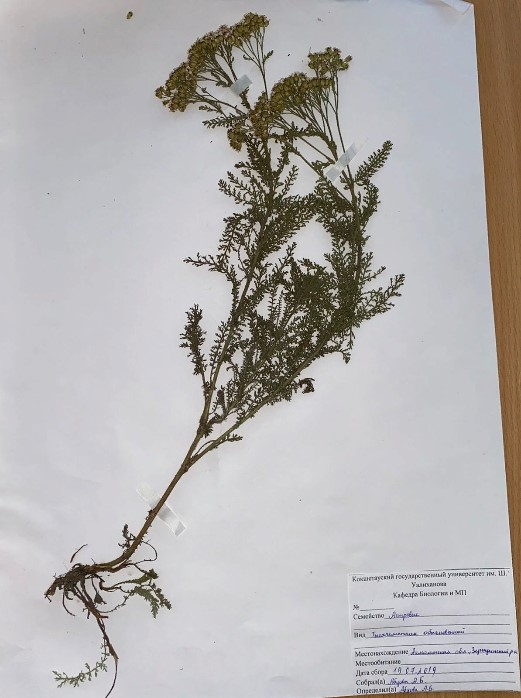

Ақбас мыңжапырақ - Achillea millefolium L - Тысячелистник обыкновенный

Биологиялық сипаттамасы: Тамыры қалың, сусымалы, тармақталған, көптеген жұқа, талшықты тамырлары, жер асты өсінділері бар. Сабақтары аз немесе жалғыз, тік немесе көтерілген, түзу, сирек бұралған, дөңгелек, биіктігі 20-80 (120-ға дейін) см, бұрыштық ойық, жалаңаш немесе сәл түкті, тек жоғарғы бөлігінде тармақталған. Жапырақ тақтасының ұзындығы 15 см—ге дейін, ені 0,5-3 см, төменгі жағында көптеген май бездері бар. Жапырақтары кезектесіп орналасады, жалпы контуры ланцет тәрізді немесе сызықты-ланцет тәрізді, екі-үш рет негізіне дейін емес, жіңішке сегменттерге бөлінеді, жапырақтардың соңғы жұмыртқа тәрізді, ені 0,3—2 мм, тез тікенекке айналады. Базальды жапырақтар жапырақшалардағы өсінділерден дамиды, сабағы кішкентай, түкті, отырықшы. Кәдімгі мыңжапырақ гүлшоғыры (оң жақта) және салыстыру үшін мыңжапырақ гүлшоғыры (сол жақта). Гүлдері кішкентай ақ немесе қызғылт түсті, кішкентай гүлшоғырларда — себеттерде жиналады, олар өз кезегінде көптеген себеттерден жалпы коримбоза гүлшоғырын құрайды. Әр себетте шеткі аналық гүлдер қамыс, ақ, сирек қызғылт; қос жынысты орта — түтікшелі, сары. Ұзындығы 3-4,6 мм, ұзын, жұмыртқа тәрізді, доғал, Тегіс немесе сәл түкті, мембраналы, жиі қоңыр жиегі бар орамалар. Аналық безі төменгі, бір ұя. Жемісі-қанаттары жоқ жалпақ, ұзын күміс-сұр Ашен, ұзындығы 1,5-2 мм. ол маусымнан жаздың аяғына дейін гүлдейді, тұқымдар шілде-қыркүйекте піседі.
Таралу аймағы: Еуропа мен Азияда кең таралған түрлер басқа континенттерге де енгізілген. Қазақстанда ол барлық жерде орманды дала, құрғақ орманды шалғындарда, шалғынды далаларда, бұталар арасында, сирек ормандарда, шеттерде, аралықтарда, жол бойында, жыралар бойымен, кен орындарында, бос жерлерде, полигондарда, кенттерде, су қоймаларының жағасында, егістіктердің шетінде өседі.